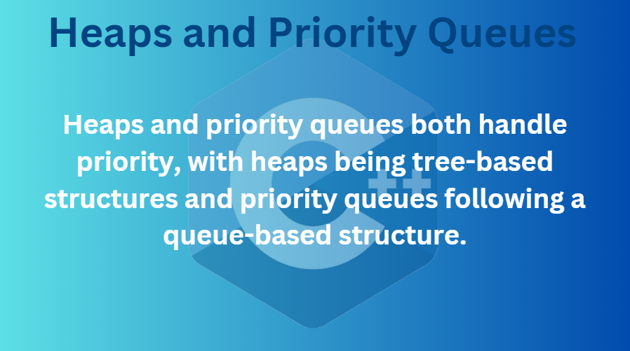
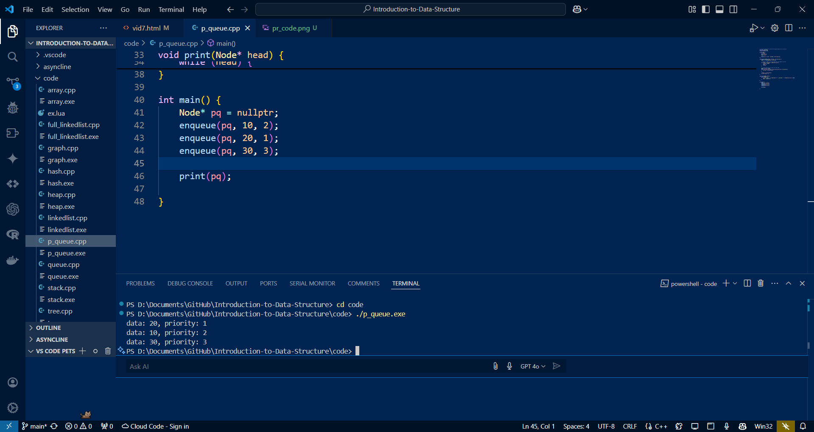
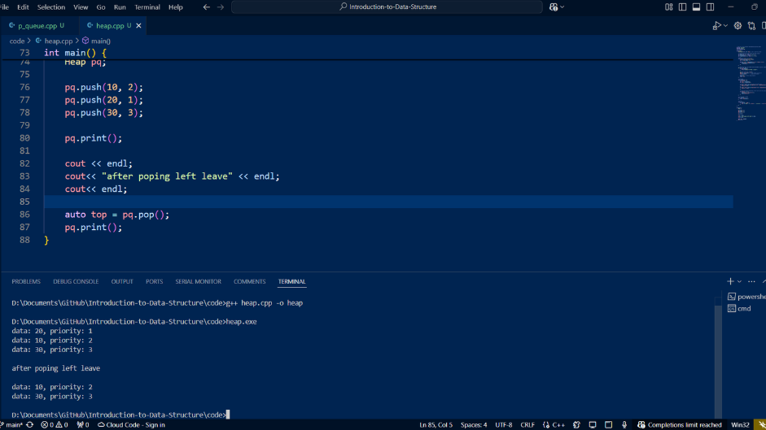

Heaps and Priority Queues
Heaps and priority queues are both used for prioritizing tasks. They are used to sort data based on priority. For example, in a hospital management system, more critical patients should be given higher priority, while less critical patients should be given lower priority. They are sorted in such a way that the patient with higher priority is checked first. That's why we use heaps and priority queues.
Priority Queues

Basically, a priority queue uses the queue data structure, which follows the first-in, first-out (FIFO) principle. Elements are added in the order they arrive and removed in the same order. However, in a priority queue, each element is also assigned a priority value. Elements with higher priority are added and removed before those with lower priority.
In the image above, you can see that on the right side is the priority queue and on the left is the simple queue. First, in the simple queue, I am adding 10, 20, and 30 by enqueuing. When I dequeue (removing), it will remove the 10 first and so on. In the priority queue, I have added 10, 20, and 30 with priority values below them. The 20 has the highest priority with 1, then the 10 with 2, and finally the 30 with the lowest priority. You can also reverse the priority by saying the higher the value, the more urgency it has, but I have added it like this for now.
Code of Priority Queue
Here is a glimpse of the code where you can see the main function for the priority queue. I added values in the same order as in the example above and prioritized them in the same order as well. Finally, you can see the output below.
Step-by-Step Code
lets see the code step by step for better understanding
boiler plate code for input/output headers and string stuffs
#include <iostream>
using namespace std;
here is the main stuff
struct Node {
int data;
int priority;
Node* next;
Node(int d, int p) : data(d), priority(p) {}
};
In this code you can see im addin some input and output headers and string properties as we have seen many times throughout this playlist. After that, you can see the main code. Once again, I created a node with an integer data and an integer priority, the priority of that data, and a node pointing to the next node. Then, the constructor just adds the value to data (d) and to priority (p) when initializing. Simple : )
void enqueue(Node*& head, int data, int priority) {
Node* n = new Node(data, priority);
Queue is empty or the new node has the highest priority
if (!head || priority < head->priority) {
n->next = head;
head = n;
return;
}
Find the correct position to insert the new node
Node* current = head;
while (current->next && current->next->priority <= priority) {
current = current->next;
}
n->next = current->next;
current->next = n;
}
In this code, Im adding the enqueue method. This method adds an element to the queue while also checking the priority value. If the queue is empty or the new node has the highest priority, it is added at the beginning. Otherwise, we find the correct position based on the priority and insert the new node there.
print function
void print(Node* head) { while (head) { cout << "data: " << head->data << ", priority: " << head->priority << endl; head = head->next; } }
This is the simple print function that uses a while loop to print all the values with their data and priority values.
int main() {
Node* pq = nullptr;
enqueue(pq, 10, 2);
enqueue(pq, 20, 1);
enqueue(pq, 30, 3);
print(pq);
}
Finally, this is the main function where i create a priority queue (pq), add values to it, and print them.
Heaps

Heaps are also used for prioritizing tasks, but unlike priority queues, they use stack and tree data structures, making them a little more complicated than priority queues.
In the image above, you can see on the right side that I am pushing, and here you can see the middle value as the root, with the left leaf being the lesser value and the right leaf being the higher value, or vice versa. On the left side, you can see that I am popping too (by the way, sorry for the mistakes, I am very bad at directions). So first, you can see when I push, I added the value in a tree-like format with [p, d], where p means priority and d means the data. The examples I used are the same as I used in the priority queue so you can understand better. After pushing all three values, the middle value becomes the root, and then the lesser value goes to one side and the greater to the other, like the 10 and 30. When popping on the left, I remove the [1,20] value, and then one side gets unbalanced because of the tree-like structure when I pop, and now it's one-sided. So this is how it works.
Code of Heaps
Here is a glimpse of the code, showing the main function where I am adding values by pushing and then printing. Then, I perform a pop operation and print again to show it works the same as described above.
Step-by-Step Code
lets see the code step by step for better understanding (
spoiler alert: it be lille complicated , take me while too ; ))
Heap is a tree structure that maintains priority order.
#include <iostream>
#include <vector>
using namespace std;
struct Heap {
vector<pair<int, int>> heap; // pair: {priority, data}
Helper functions to get parent and child indices
int parent(int i) { return (i - 1) / 2; }
int leftChild(int i) { return 2 * i + 1; }
int rightChild(int i) { return 2 * i + 2; }
Add element to the heap
void push(int data, int priority) {
heap.push_back({priority, data});
int i = heap.size() - 1;
while (i != 0 && heap[parent(i)].first > heap[i].first) {
swap(heap[i], heap[parent(i)]);
i = parent(i);
}
}
Let's understand the first part of the code:
- First, we include necessary headers and create a Heap structure
- Inside the Heap, we store pairs of priority and data using a vector
- We have three helper functions:
- parent(i): Finds the parent node
- leftChild(i): Finds left child
- rightChild(i): Finds right child
- The push function adds new elements:
- Adds new pair to vector end
- Moves it up until heap order is restored
remove and return the element with the highest priority (lowest value)
pair pop() {
if (heap.empty()) {
throw runtime_error("Heap is empty");
}
pair root = heap[0];
last element to the root
heap[0] = heap.back();
remove last element
heap.pop_back();
restore heap property
heapify(0);
return root;
}
min-heap
void heapify(int i) {
int smallest = i;
int left = leftChild(i);
int right = rightChild(i);
if (left < heap.size() && heap[left].first < heap[smallest].first) {
smallest = left;
}
if (right < heap.size() && heap[right].first < heap[smallest].first) {
smallest = right;
}
if (smallest != i) {
swap(heap[i], heap[smallest]);
heapify(smallest);
}
}
bool isEmpty() {
return heap.empty();
}
void print() {
for (auto &p : heap) {
cout << "data: " << p.second << ", priority: " << p.first << endl;
}
}
};
Now let's understand the second part:
- The pop function removes highest priority element:
- Takes root element (highest priority)
- Moves last element to root
- Restores heap order
- The heapify function maintains heap order:
- Finds smallest among root and children
- Swaps if needed
- Continues recursively
- Helper functions:
- isEmpty(): Checks if heap empty
- print(): Shows all elements
int main() {
Heap pq;
pq.push(10, 2);
pq.push(20, 1);
pq.push(30, 3);
pq.print();
cout << endl;
cout<< "after poping left leave" << endl;
cout<< endl;
auto top = pq.pop();
pq.print();
}
And finally here im pushing , printing and poping the values as i explained in example above
So this concludes today’s tutorial. See you in the next one 😊